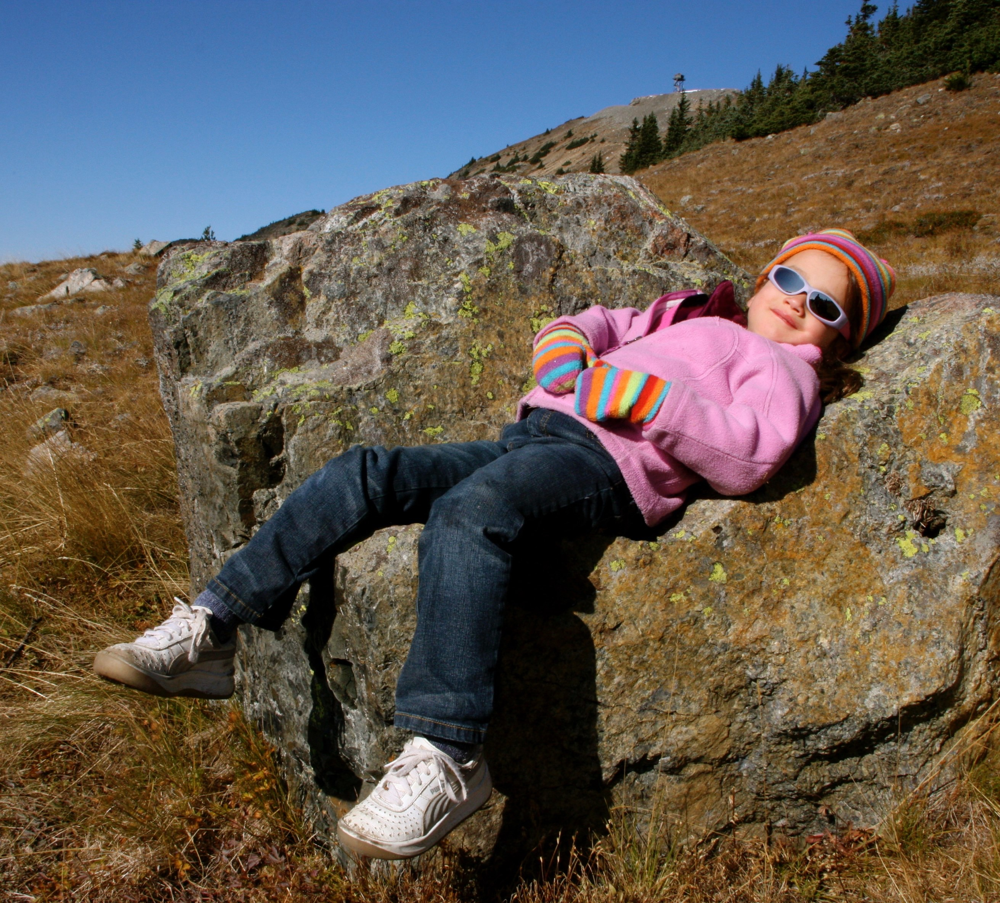
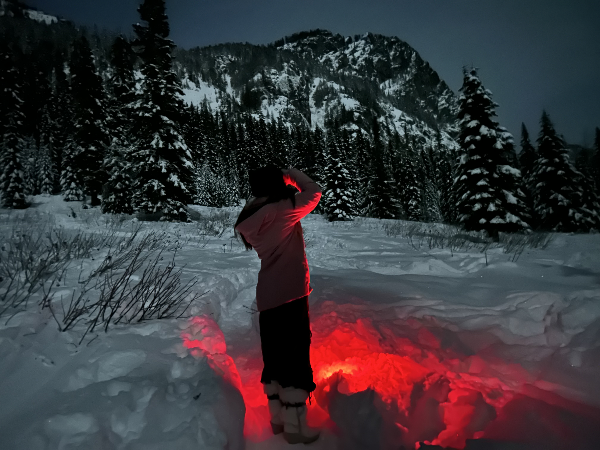
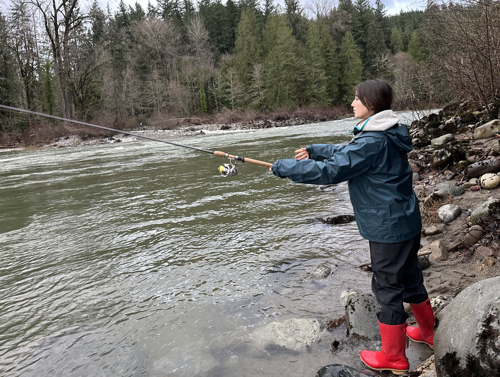

MESS, where fashion meets function
We design multi-functional gear that transitions from the boardroom to the backcountry so you can get more and buy less.
Our Story
Growing up in Washington state, backpacking, hiking, skiing, and foraging were the backbone of my childhood. As much as I loved being outside, I hated the look of the gear needed for the rainy, cold climate. Before any outdoor excursion, debates would inevitably ensue as I tried to convince my parents I didn’t need a jacket, rainboots, or a hat, mainly because they clashed with my outfit.
In an attempt to make my gear align with my own tastes, I would embellish my fishing chest waders, add faux fur cuffs to my winter coat, and find small ways to make functional gear feel more like fashion. Still, my dad would always say there’s no such thing as bad weather, only bad gear, and after a while, I accepted that being outside meant wearing garments that didn’t align with my sense of style.
Whenever it was time to replace a winter jacket, hiking boots or old gear I would always push for the trendy options, convinced they could withstand our climate of near constant rainfall. My dad would always find some technical flaw and repeat his mantra of function over fashion. Over time, I began to question why function and fashion operate as separate entities in the first place.
That is how MESS was born, with a belief that function and fashion do not need to be opposites, but can exist seamlessly as one.


Reason for Being
MESS was born from a simple frustration that to be prepared for the outdoors you had to abandon your sense of style. MESS exists to challenge that compromise.
MESS designs garments that are both technically built and visually intentional. Pieces that can move from the boardroom to the backcountry without requiring you to change garments or who you are.
Driven by a love of nature we recognize the overconsumption of fashion is one of the greatest threats to our environment. We believe the solution is not more product but better product.
Through multi-functional design, lifetime durability guarantees and a commitment to circular materials, MESS encourages people to buy less and get more from what they own.
For there to be a future in the outdoors, we must not only protect our planet but rethink how we exist within it.
Brand Values
At MESS, we value intentional design that functions in every climate with fashionable flair. We prioritize purpose over excess. Every detail serves a function, balancing performance, versatility, and aesthetics.
Rooted in a deep respect for our planet, every piece is constructed using 100% recycled polyester, wool, and down, all traceable to their origins. We hold ourselves accountable through annual climate reporting and full material transparency so consumers can understand exactly what they are wearing, where it came from and who made it.
Fashion can only do so much to curb climate change and to expand our commitment to a greener world, at least 5% of all profits will be donated to organizations researching and implementing conservation efforts.
Because MESS cannot do this alone, sustainable advancements in materials will be shared to help the industry as a whole to a more sustainable future.
